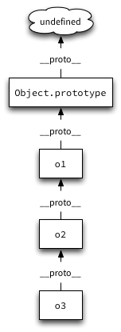
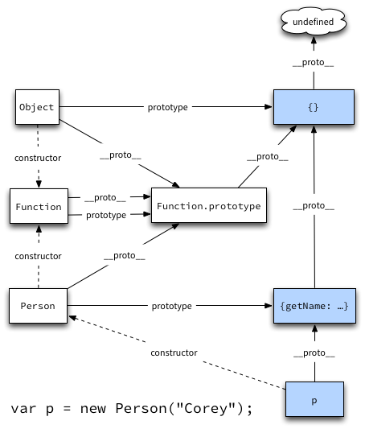
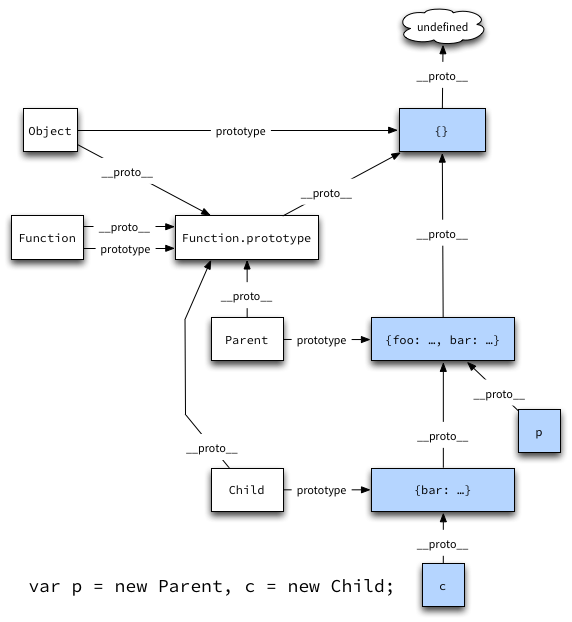

JS 102
Prototype based inheritance
State and Behavior
- state is the data
- behavior is the methods/functions that operate on the data
Inheritance
- a means to share state or behavior or both between multiple objects
- two types: class based and prototype based
Class based inheritance
- separates behavior (classes) and state (instance)
- classes store methods
- instances store state in instance variables
- instances are created from classes and have a pointer back to their class
- classes can inherit behavior from other classes
Class based example (Ruby)
class Parent
def self.class_method
'Parent.class_method'
end
def instance_method
'Parent#instance_method'
end
end
class Child < Parent
end
Child.class_method # => "Parent.class_method"
c = Child.new # => #<Child:0x007ff86a8754c8>
c.instance_method # => "Parent#instance_method"
c.class # => Child
Child.ancestors # => [Child, Parent, Object, Kernel, BasicObject]
Class based example (Ruby)

Prototype based inheritance
- no separation of behavior and state
- objects store both behavior and state
- objects may be created directly from other objects
- original object is the prototype of the newly created object
Prototype based example (JS)
var o1 = { foo: "o1.foo" },
o2 = Object.create(o1),
o3 = Object.create(o2);
o1.foo; // => "o1.foo"
o2.foo; // => "o1.foo"
o3.foo; // => "o1.foo"
Object.create
- creates a new object with the specified prototype object
- introduced in ECMAScript 5
- easy to polyfill
Prototype based example (JS)

Prototype based example (JS)
var o1, o2, o3;
o1 = { foo: "o1.foo" };
o2 = Object.create(o1);
o3 = Object.create(o2);
o2.prototype; // => undefined
o3.prototype; // => undefined
Prototype based example (JS)

Prototype based example (JS)
var o1, o2, o3;
o1 = { foo: "o1.foo" };
o2 = Object.create(o1);
o3 = Object.create(o2);
o1.__proto__ === Object.prototype; // => true
o2.__proto__ === o1; // => true
o3.__proto__ === o2; // => true
__proto__
- non-standard (not supported in IE)
- refers to the object's internal
[[Prototype]] property
- can be modified in some engines (Firefox) but not others
Object.getPrototypeOf
- returns the object's prototype (
[[Prototype]])
- introduced in ECMAScript 5
- the standard way of accessing
__proto__
- not as easy to polyfill
Constructor functions
- used with the
new operator to create objects and initialize them
- looks very similar to instantiating an object from a class in Java or Ruby
- big source of confusion for new javascript developers
Constructor functions - how do they work?
-
Invoking a constructor function with the
new operator creates a new object
whose [[Prototype]] is set to the constructor function's prototype property.
-
The new object is bound to the
this variable within the constructor function's body.
Constructor function example
function Person(name) {
this.name = name;
}
Person.prototype = {
getName: function() { return this.name; }
};
var p = new Person("Corey");
p.__proto__ === Person.prototype; // => true
p.getName(); // => "Corey"
Constructor function example

Inheritance with Constructor functions
function Parent() {}
Parent.static = function() { return 'Parent.static'; };
Parent.prototype = {
foo: function() { return 'Parent#foo'; },
bar: function() { return 'Parent#bar'; }
};
function Child() {}
Child.prototype = Object.create(Parent.prototype);
Child.prototype.bar = function() { return 'Child#bar'; };
var p = new Parent(), c = new Child();
Parent.static(); // => "Parent.static"
p.foo(); // => "Parent#foo"
p.bar(); // => "Parent#bar"
c.foo(); // => "Parent#foo"
c.bar(); // => "Child#bar"
Child.static(); // => TypeError: Object function Child() {} has no method 'static'
Inheritance with Constructor functions

Constructor functions are an anti-pattern
- They are NOT classes and do not behave like them
- Everything that can be accomplished with class based inheritance can also be accomplished with prototype based inheritance.
- Just use
Object.create
Object.create polyfill
if (!Object.create) {
Object.create = function(o) {
var F = function() {};
F.prototype = o;
return new F();
};
}
Zoom Object system
- Zoom has no classes!
- Instead it uses prototype objects to define common behavior
- Prototype objects are used in a similar manner to how class objects are used in other languages
- Since there are no classes, we avoid the problem of making class-level inheritance work
Basic Zoom Example
Demo.MyType = Z.Object.extend(function() {
this.def('foo', function() {
return 'Demo.MyType.foo';
});
});
Demo.MyType.ancestors(); // => [Demo.MyType, Z.Object]
Demo.MyType.foo(); // => "Demo.MyType.foo"
var x = Demo.MyType.create(); // => #<Demo.MyType:38>
x.foo(); // => "Demo.MyType.foo"
x.ancestors(); // => [#<Demo.MyType:38>, Demo.MyType, Z.Object]
Zoom Array example
var a = Z.A(1,2,3); // => #<Z.Array:37 [1, 2, 3]>
a.size(); // => 3
a.reverse(); // => #<Z.Array:38 [3, 2, 1]>
a.ancestors(); // => [#<Z.Array:37 [1, 2, 3]>,
// Z.Array, Z.Observable, Z.Orderable,
// Z.Enumerable, Z.Object]
Zoom supr example
Demo.Parent = Z.Object.extend(function() {
this.def('foo', function() {
return 'Demo.Parent.foo';
});
});
Demo.Child = Demo.Parent.extend(function() {
this.def('foo', function() {
return this.supr() + ', Demo.Child.foo';
});
});
var p = Demo.Parent.create(),
c = Demo.Child.create();
p.foo(); // => "Demo.Parent.foo"
c.foo(); // => "Demo.Parent.foo, Demo.Child.foo"